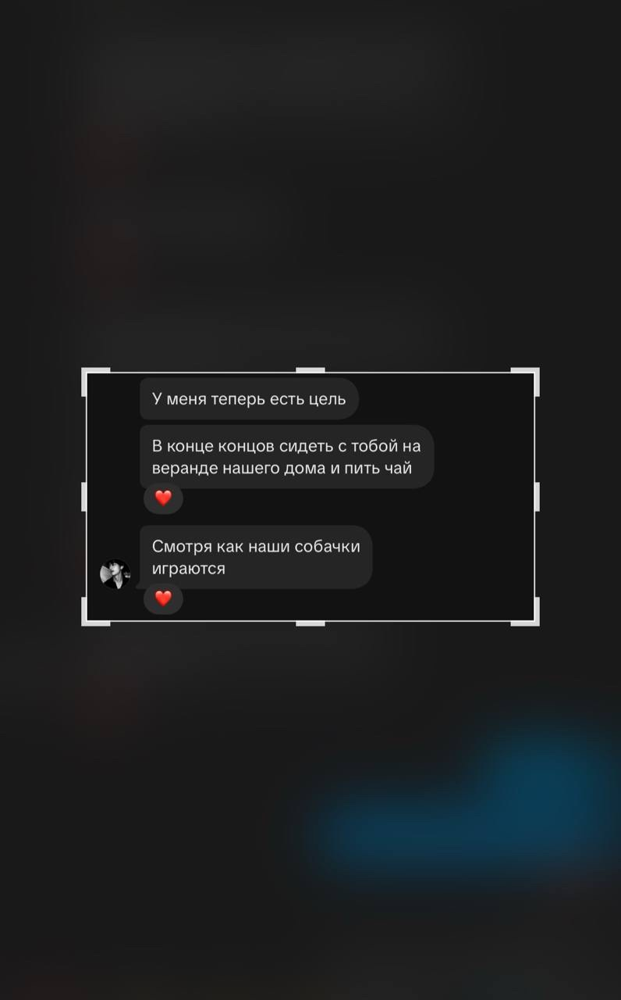
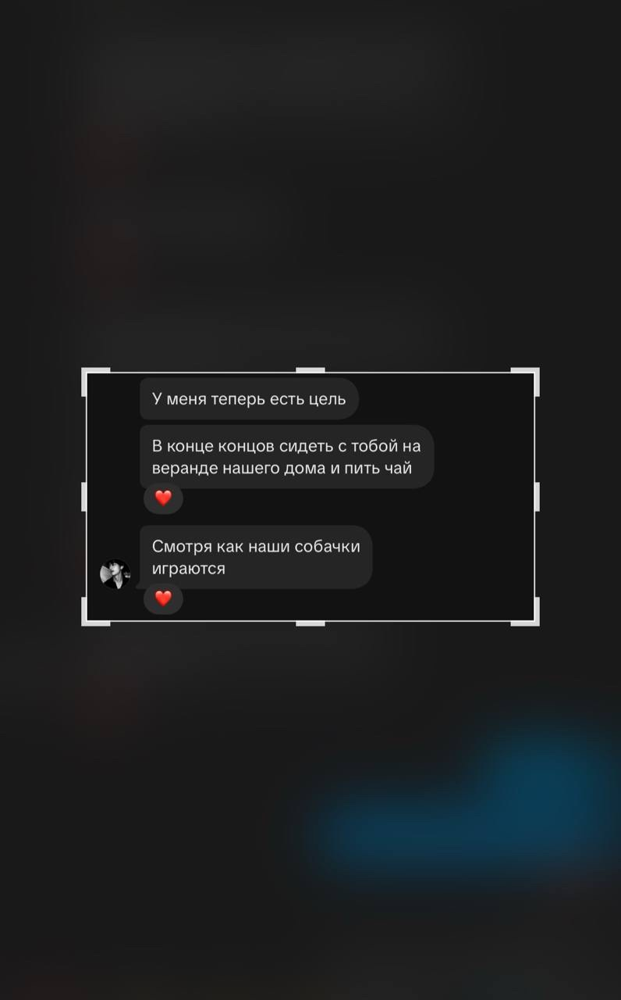

Зайка, солнышко, моя любимая девочка. просто словами не описать, как я тебя люблю.
в этом письме, я хочу передать всю благодарность тебе, за то, что ты два месяца назад появилась в моей жизни. с того дня ты сделала ее намного ярче. и вправду, как ясное солнышко. спасибо что всегда рядом, спасибо за твое понимание, доброе сердце и искреннюю заботу. я к тебе уже очень и очень привязалась, ты стала больше, чем просто часть жизни, ты стала смыслом жизни.
возможно это прозвучит и глупо, «человек с интернета» которого я ни разу не видела в живую, однако, я не представляю свою жизнь без тебя. я и не хочу без тебя. искренне надеюсь, что мы будем теми людьми, что смогли пройти все эти сложности с расстоянием, а после будут жить в своем доме, с двумя собачками. я верю, что мы сможем. верю, что любые трудности преодолеем, и будем лежать вместе в обнимку, смеяться, перечитывая всю нашу переписку, вспоминая все наши особенные моменты. когда мы и в горе и в радости, всегда оставались рядом, несмотря ни на что.
ты моя особенная девочка. я не зря так называю тебя. ведь только ты видишь меня такой, какой я не показываюсь другим. с тобой я настоящая, с тобой я могу быть слабой. с тобой мне всегда хорошо.
и чтобы не случилось в будущем, всегда знай: я тебя любила, люблю, и буду любить всегда. а еще я знаю, что навряд ли уже полюблю кого то настолько, что крышу сносит от одной лишь мысли, что ты моя девушка. боже мой, эта прелестная девочка и вправду моя?
я поздравляю нас с нашим вторым месяцем, любимая. люблю, целую, обнимаю 🥹❤️